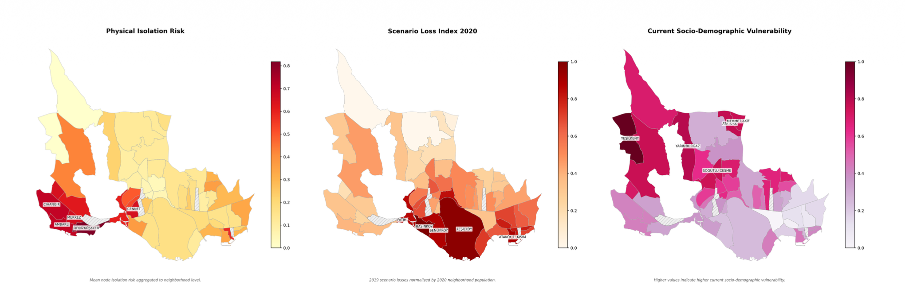
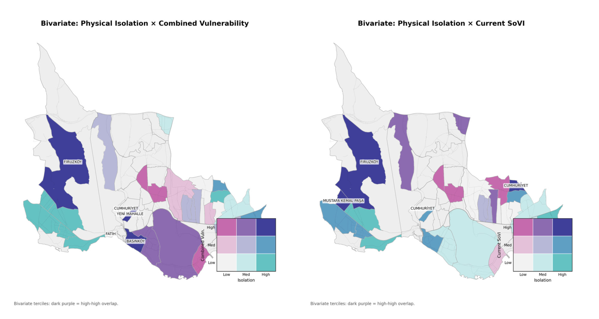

Coupling Physical Network Fragility, Expected Earthquake Loss, and Socio-Demographic Vulnerability in Four Districts of Istanbul
Post-earthquake emergency response depends not only on how much damage a city sustains, but on whether its road network remains functional enough for help to reach those affected. This study builds three independent risk layers — physical network fragility, expected scenario loss, and current social vulnerability — for four contiguous high-risk districts of western Istanbul (Avcılar, Küçükçekmece, Bahçelievler, Bakırköy) under a Mw 7.5 earthquake scenario, and tests whether they overlap or describe different geographies of risk.
I built the road network construction (OSMnx pipeline across four district polygons), the edge-level failure probability model (road classification, bridge/viaduct exposure, USGS Vs30 soil amplification), the 1,000-iteration Monte Carlo simulation under independent and spatially correlated failure modes, the node-level isolation risk mapping, the community detection (Louvain) and topological criticality analysis (Girvan-Newman), and the in-network decoupling test between topological criticality and structural exposure. My co-author contributed the socio-demographic vulnerability index and the integration of the IBB scenario loss layer.

The three layers mapped individually: physical isolation risk (left), expected scenario loss (centre), and current socio-demographic vulnerability (right).
ρ = 0.01
Physical isolation shows no significant association with expected scenario loss (p = 0.96)
p = 0.502
Topologically critical and structurally vulnerable edges form essentially non-overlapping sets (hypergeometric test)
1.6%
Removing the 21 highest-betweenness junctions drops the giant connected component below 50%
ρ = −0.16
Physical isolation and social vulnerability are statistically independent — the two layers describe different geographies (p = 0.26)
The three risk layers are largely independent. The network is highly robust to random failure but critically vulnerable to targeted attack. Crucially, the high-isolation/high-loss core (south-central waterfront) and the high-isolation/high-social-vulnerability set (western Avcılar peninsula) are spatially disjoint — a "silent isolation" group that any loss-based triage would miss.

Bivariate map of physical isolation against scenario loss across the four study districts. Dark cells mark high-high overlap.
Network analysis applied end-to-end on a real urban system: graph construction from open geospatial data, probabilistic edge modeling, Monte Carlo simulation, community detection, and a clean separation between topological and structural dimensions of risk. The framework treats their co-variation as an empirical question rather than an assumption, which is the methodological core of the contribution.
Paper under preparation for submission. Code and supporting materials available on request — s.nurgkce@gmail.com